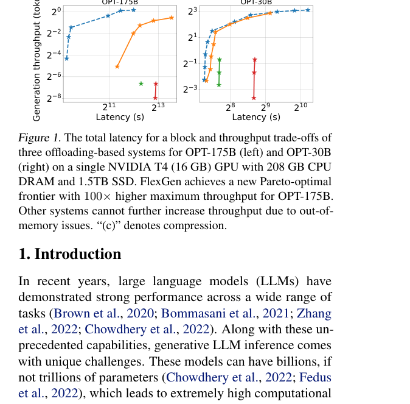
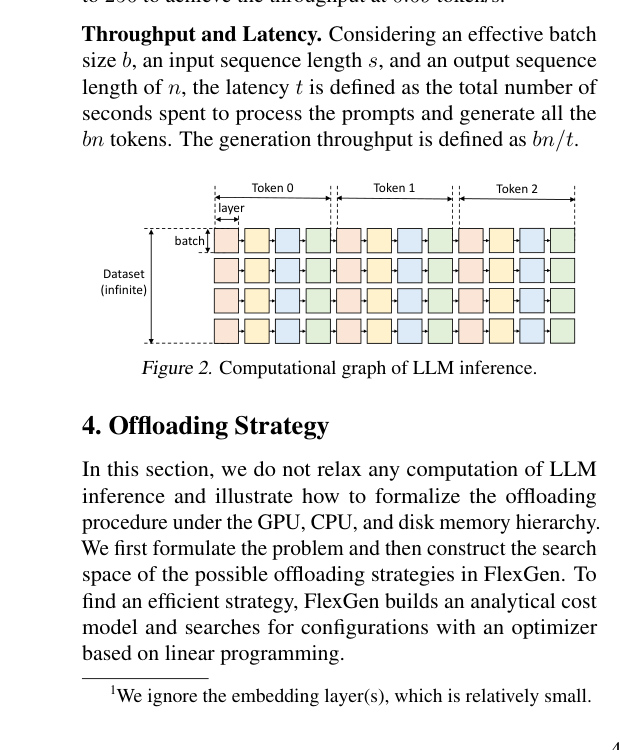
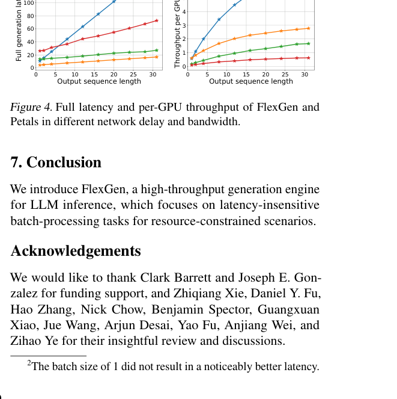

FlexGen：单 GPU 上的高吞吐大语言模型生成式推理
ICML 2023 · 常见提问 Q1–Q7
Q1：论文要解决什么问题？
OPT-175B 等模型的权重远超单卡显存。已有 offload 方法常按层搬权重，batch 太小导致每生成少量 token 就反复支付 PCIe/磁盘传输，吞吐极低。FlexGen 研究延迟不敏感的批量生成，目标是在 GPU 很小但 CPU/磁盘充足时最大化总吞吐。
Q2：有哪些相关研究，区别在哪里？
ZeRO-Inference、DeepSpeed 等把权重卸载到 CPU/NVMe，主要优化可运行性或较小 batch；Petals 走分布式协作推理。FlexGen 的区别是统一考虑权重、激活和 KV cache 的三级放置，并针对生成式推理的迭代结构做块调度与 LP 搜索。它与 vLLM 服务在线并发的目标不同。
Q3：论文如何解决这个问题？
FlexGen 把 batch 划分为 GPU batch，按层遍历并流水化权重加载、GPU 计算、激活/KV 搬运。策略变量决定三类张量在 GPU、CPU、磁盘的比例和计算位置；代价模型构成线性规划，搜索容量与带宽约束下的吞吐最优点。权重和 KV 还可压到 4 bit，CPU attention 避免把全部 KV 送回 GPU。
b、g、p 可理解为 batch、GPU batch 分块和各类张量放置比例。LP 用硬件带宽/容量与算子代价估计稳态瓶颈，选择能最大化离线吞吐的执行策略。
Q4：论文做了哪些实验，结论可靠吗？
作者在单张 16GB T4 等受限硬件上运行 OPT 系列，并与 DeepSpeed/Accelerate 等卸载方案比较吞吐、延迟和最大可运行规模。OPT-175B 在有效 batch 144 时首次达到约 1 token/s；在 HELM 上，16GB GPU 可在约 21 小时完成 30B 模型的七个代表性子场景。



Q5：有什么局限与可进一步探索的点？
该设计依赖大 batch，单请求延迟很高，不适合聊天式在线服务；4-bit KV/权重可能对不同模型和任务产生精度影响，磁盘耐久与多租户干扰也未充分覆盖。可研究 NVMe/GPU Direct Storage、动态 batch、异构多 GPU、更新后的量化格式，以及与在线/离线混合队列的隔离。
Q6：如何概括论文的主要内容？
FlexGen 把有限 GPU 看成三级存储流水线中的计算加速器，而非必须容纳全部状态的唯一设备。它用代价模型决定哪些权重、激活与 KV 留在 GPU、CPU 或磁盘，并通过大 batch、分块和重叠摊薄 I/O，再配合 4-bit 压缩让超大模型在单张普通 GPU 上获得可用离线吞吐。
Q7：系统的详细主要流程是什么？
启动时读取硬件容量/带宽与模型形状，LP 选出放置比例和 batch 参数；运行时把请求分成多个 GPU batch。对每一层，系统预取下一批权重，同时计算当前块，并异步写回激活/KV；必要时 attention 在 CPU 上读取主存 KV。完成一层后推进到下一层，所有层结束得到下一 token，再对整个 batch 重复。压缩/解压与传输尽量和 GPU 计算重叠。